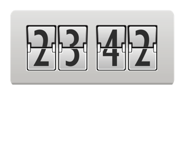
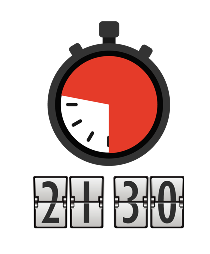
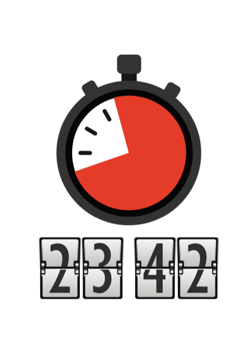
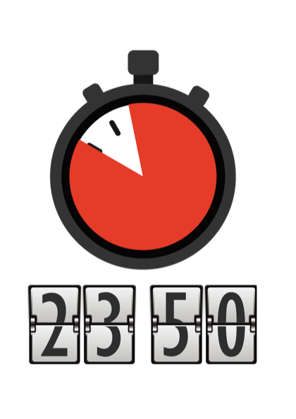
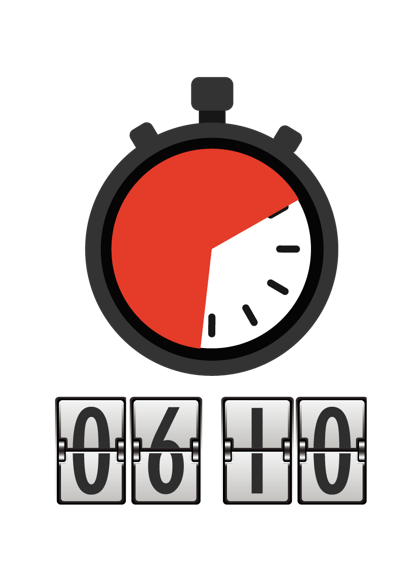
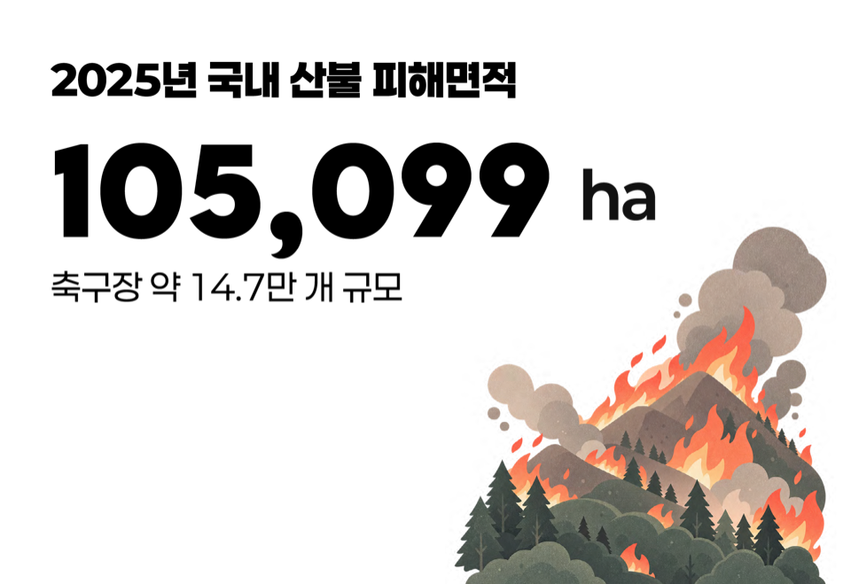
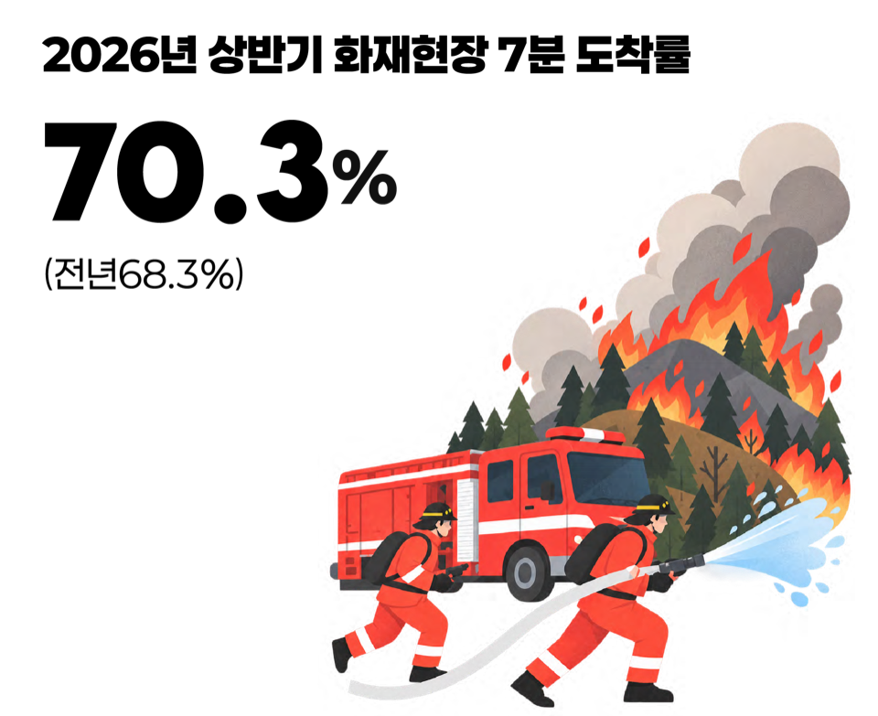
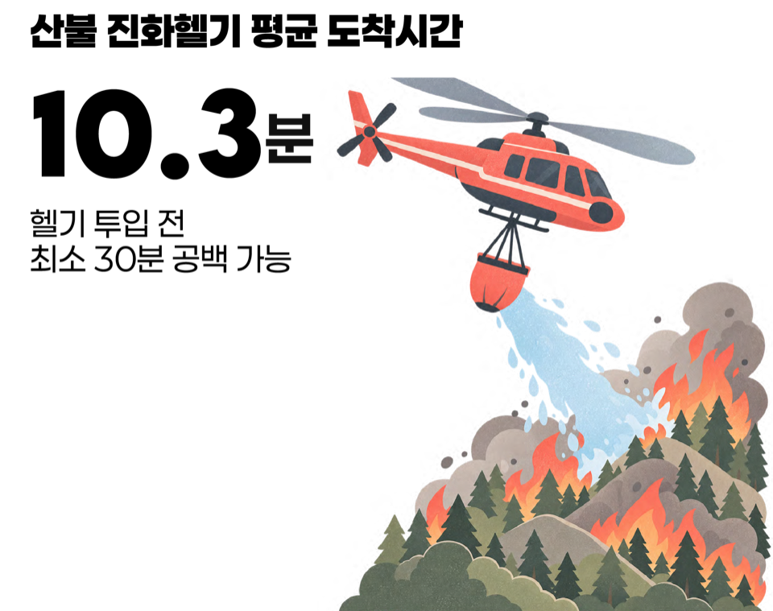
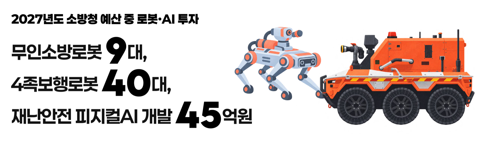

그날 밤, 능선 위의 불빛
밤 11시 42분, 야산 능선에서 작은 불빛 하나가 흔들린다. 상황실 모니터에 좌표 하나가 뜨고 무전기 너머로 첫 신고가 들어온다. 여기서 가장 가까운 소방서까지는 22km, 진화 헬기는 해가 뜨기 전까지 이륙할 수 없다. 이것은 실제 사건이 아니다. 하지만 시나리오의 내용은 2025~2026년 대한민국에서 실제로 일어난 일들을 바탕으로 한다.
- 건조주의보 발효
-

첫 화재 신고 -
화재 신고
8분 경과 -
화재 신고
23분 경과 -
화재 신고
2시간 48분 경과 -
화재 신고
6시간 28분 경과
-
건조주의보 발효

기상청, 청현리 일대에 건조주의보·강풍주의보 동시 발효
두 달간 강수량은 평년의 절반에도 못 미쳤다. 30대 소방장 박현수는 진압대원 6명, 펌프차 2대로 홀로 야간 근무 중이다. 인근 소방서 인력은 두 시간 전 발생한 주택화재에 이미 투입되어 있다. 청현리로 이어지는 진입로는 왕복 1차선, 굽이가 많아 소방차 진입에만 평소에도 15분 이상이 걸린다. 건조특보가 내려진 지 벌써 사흘째, 낙엽 더미는 발로 밟으면 바스러질 만큼 메말라 있었다. 박현수는 무전으로 관할 구역 내 산불감시초소 3곳에 특별 경계근무를 지시했지만, 야간에는 육안 감시 외에 달리 손쓸 방법이 없었다. 상황실 벽면 전광판에는 ‘화재위험지수 매우 높음’이 붉게 깜빡이고 있었다.
-
첫 화재 신고

첫 신고, 가장 가까운 소방서까지 22km
야산 능선에서 작은 불빛이 흔들린다. 상황실 모니터에 좌표가 뜨고 첫 신고가 들어온다. 가장 가까운 소방서까지는 22km. 신고자는 야간 등산객으로, “능선 쪽에서 불빛이 점점 커지고 있다”며 다급한 목소리를 전했다. 상황실은 즉시 인근 주민 140여 가구에 안전 안내 문자를 발송했지만, 아직 체감하는 주민은 많지 않았다. 박현수는 출동벨이 울리자마자 대원들을 깨워 장비를 점검했고, 펌프차 2대는 굽이진 산길을 오르는 데만 6분이 걸렸다. 무전기 너머로는 “진입로 폭이 좁아 추가 차량 진입이 어렵다”는 보고가 이어졌다.
-
화재 신고 8분 경과

강풍에 두 갈래로 갈라져 번지는 불씨
신고 8분 만에 박현수의 대원들이 현장에 도착한다. 순간최대풍속 15m/s를 넘는 강풍이 불씨를 능선 너머로 실어 날라, 불길은 이미 두 갈래로 갈라져 있다. 6명으로는 두 방향을 동시에 막을 수 없다. 현장에 도착한 대원들은 매캐한 연기와 얼굴을 덮치는 열기에 몇 걸음 뒤로 물러서야 했다. 불길 한 갈래는 북쪽 사면을 타고 민가 쪽으로, 다른 한 갈래는 남쪽 능선을 넘어 임도 쪽으로 번지고 있었다. 박현수는 다급히 인근 소방서에 추가 지원을 요청했지만, 가장 가까운 지원 인력도 도착까지 최소 25분이 필요하다는 답이 돌아왔다. 대원 6명은 둘로 나뉘어 우선 북쪽 사면을 막기로 했지만, 남쪽 불길은 사실상 방치할 수밖에 없었다.
-
화재 신고 23분 경과
점점 커지는 불길, 대형 진화 헬기는 일출 후 투입 가능
박현수가 상급 기관에 헬기 지원을 요청하지만 돌아온 답은 “일출 후 투입 가능”. 항공안전법상 대형 진화 헬기·드론은 야간·비가시권 비행이 원칙적으로 금지돼 있다. 불길은 이미 폭 400m까지 번진 상태였고, 청현리 저지대 주민 60여 명에게 긴급 대피 방송이 나갔다. 마을회관으로 대피한 주민들은 창밖으로 붉게 물든 하늘을 바라보며 발을 동동 굴렀다. 박현수의 무전기에서는 “지상 인력만으로는 확산 속도를 따라갈 수 없다”는 보고가 반복됐다.
실제로 2026년 상반기 전국 화재현장 7분 도착률은 70.3%(소방청), 산불 헬기 평균 도착시간이 10.3분으로 단축된 뒤에도 헬기 투입 전 최소 30분 골든타임의 공백은 구조적으로 남아 있다.
-
화재 신고 2시간 48분 경과
세 갈래로 확산한 불길, 대원 6명으로는 역부족
불길이 두 갈래에서 세 갈래로 늘어난다. 6명이 감당할 수 있는 규모가 아니었다. 펌프차 한 대는 물탱크가 바닥나 재급수를 위해 잠시 자리를 비워야 했고, 대원들은 두 시간 넘게 방화복을 벗지 못한 채 탈진 직전까지 몰렸다. 박현수는 무전으로 “이대로면 임도 너머 축사 지역까지 번질 수 있다”고 보고했지만, 추가 인력은 여전히 도착 전이었다. 능선 너머로 또 다른 불빛이 번지기 시작했다는 목격담까지 이어졌다.
2025년 3월 의성에서 시작된 경북 산불도 강풍 속 야간 시간대에 초기 진화가 지연되면서 안동·청송·영덕·영양까지 번졌고, 인명피해 10명 이상, 재산피해 1조 8,300억 원으로 이어졌다.
-
화재 신고 6시간 28분 경과

일출, 진화 헬기 투입됐지만…
마침내 진화 헬기가 이륙한다. 그러나 불길은 이미 능선 세 곳을 넘어 확산된 뒤였다. 첫 화재신고가 있었던 밤 11시 42분으로부터 꼬박 6시간 30분, 공중에서 내려다본 피해 범위는 축구장 수십 개를 합친 규모로 번져 있었다. 박현수와 대원들은 밤새 한숨도 돌리지 못한 채 진화 작업을 이어갔다. 날이 밝으며 드러난 것은 그을린 야산과 아슬아슬하게 화마를 피한 마을 어귀의 집 몇 채뿐이었다.
데이터로 보는 오늘의 재난안전산업



